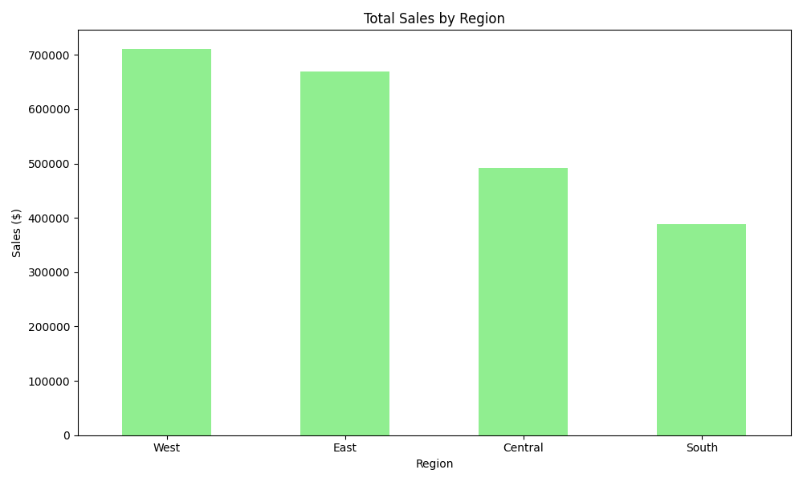
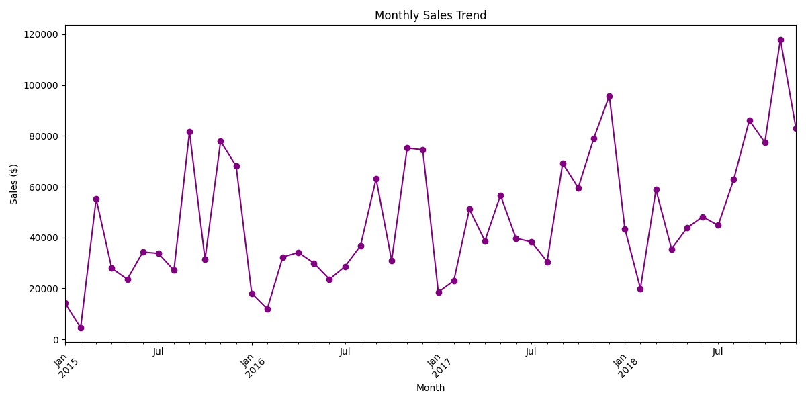

My Projects

Audit and Risk Assessments
Conducted audit, risk, and control assessments for clients at Ernst & Young, ensuring compliance with regulatory and internal standards, contributing $5M in revenue.

Data Analysis Dashboard
Built interactive dashboards using Power BI and Alteryx to identify process inefficiencies and visualize sales trends at Ernst & Young.

Technical Support Initiative
Provided technical support and troubleshooting as an intern at ACI Learning, securing networks and resolving hardware/software issues.

Sales Data Dashboard
Developed a Python-based dashboard using pandas and matplotlib to analyze retail sales data. Calculated trends by category, region, and month, finding Technology led with over $800,000 in sales. View Code on GitHub

